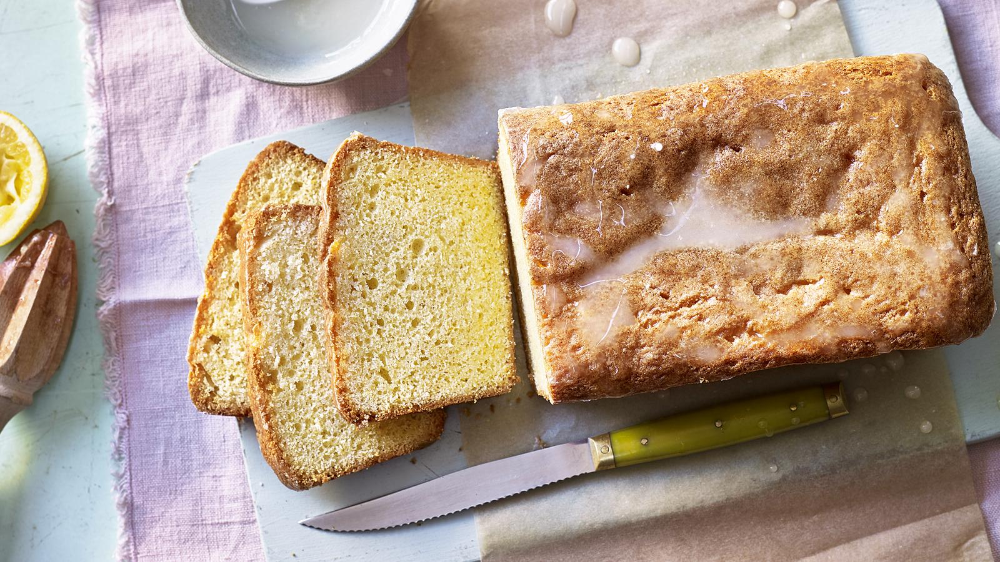

Lemon Drizzle Cake

Description
This wonderfully simple lemon drizzle cake recipe is super-quick to prepare and perfect for weekend baking with
the kids. This recipe makes a lemon drizzle loaf.
This recipe makes a lemon drizzle loaf, but if you want to make a lemon cake in a different shape, try a cake
calculator.
Ingredients
- 225g/8oz unsalted butter, softened, plus extra for greasing
- 225g/8oz caster sugar
- 4 free-range eggs
- 225g/8oz self-raising flour
- 1 unwaxed lemon, zest and juice
- 85g/3oz icing sugar
Steps
- Preheat the oven to 180C/160C Fan/Gas 4. Grease a 900g/2lb loaf tin with a little butter and line with
baking paper.
- Tip the remaining butter and caster sugar into a food processor and blend for a few seconds.
- Add the eggs one at a time, blending after each addition.
- Add the flour and lemon zest and blend until smooth.
- Pour the batter into the lined baking tin, flatten the top with the back of a spoon and bake for 50–55
minutes.
- Meanwhile, stir together the lemon juice and icing sugar.
- When the cake has cooled a little, poke holes in the top using a skewer, chopstick or a piece of raw
spaghetti.
- Drizzle over the icing, set aside for a few minutes, and serve.
Go Back to Home